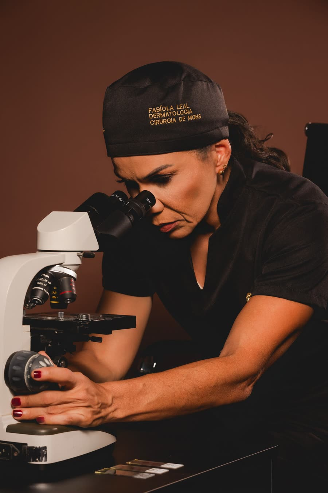

Início · Cirurgia de Mohs
Cirurgia de Mohs: as margens vistas ao microscópio, durante a cirurgia.
Uma técnica para tratar alguns tipos de câncer de pele em que cada camada retirada é examinada antes de a cirurgia terminar. A pele saudável ao redor é preservada ao máximo.
A técnica
O que é a cirurgia micrográfica de Mohs
É uma cirurgia para retirar tumores de pele em que o próprio cirurgião examina as margens da peça ao microscópio, durante o procedimento. A técnica leva o nome do cirurgião americano Frederic Mohs, que a desenvolveu.
O objetivo é duplo: retirar todo o tumor e preservar o máximo possível de pele saudável. Por isso ela é tão usada em áreas em que cada milímetro faz diferença, como o rosto.
A Dra. Fabíola Leal fez fellowship em cirurgia micrográfica de Mohs no Hospital do Servidor Público Municipal e na Faculdade de Medicina do ABC, em São Paulo, e está na lista de cirurgiões de Mohs da Sociedade Brasileira de Dermatologia.
Comparação
O que muda em relação à cirurgia convencional
Cirurgia convencional
O tumor é retirado com uma margem de segurança e a peça segue para o laboratório. O resultado das margens chega dias depois.
Cirurgia de Mohs
A peça é mapeada e as margens são examinadas no mesmo dia, durante a cirurgia. Se ainda houver tumor, o cirurgião sabe exatamente onde.
Na técnica de Mohs, os cortes da peça são feitos de forma a examinar toda a sua margem, e não apenas amostras dela. Quando uma nova camada é necessária, ela é retirada somente no ponto em que o tumor continua.
Passo a passo
Etapa por etapa
- Marcação e anestesiaA área é marcada e, em geral, anestesiada localmente. O paciente fica acordado.
- Primeira camadaO tumor visível é retirado com uma fina margem de pele ao redor.
- Mapa da peçaO fragmento é dividido, marcado com cores e desenhado em um mapa, para saber de onde veio cada parte.
- Leitura ao microscópioAs lâminas são preparadas e examinadas enquanto o paciente aguarda, com um curativo provisório.
- Nova camada, só onde precisaSe alguma margem ainda tiver tumor, uma nova camada é retirada apenas naquele ponto do mapa.
- ReconstruçãoCom as margens livres, a ferida é fechada da forma mais adequada para o local.
Indicação
Para quais casos costuma ser indicada
A cirurgia de Mohs é indicada principalmente para carcinomas basocelulares e espinocelulares em situações específicas:
- Tumores no rosto, sobretudo no nariz, nas pálpebras, nos lábios e nas orelhas
- Tumores no couro cabeludo
- Tumores que voltaram depois de um tratamento anterior
- Lesões com limites pouco nítidos
- Tumores maiores ou com crescimento mais agressivo ao microscópio
- Áreas em que é importante preservar função, como mãos, pés e região genital
O tipo de tumor, o resultado da biópsia, o local e o tamanho são avaliados em consulta. Nem todo câncer de pele precisa de cirurgia de Mohs.
Duração
Por que a cirurgia pode levar algumas horas
Cada camada retirada precisa ser processada e examinada antes do passo seguinte. Por isso o tempo total depende de quantas camadas forem necessárias, e boa parte dele é de espera.
É comum levar um acompanhante, algo para ler e roupas confortáveis. As orientações para o dia são passadas na consulta.

Local
Onde a cirurgia é feita
A Dra. Fabíola atende e realiza a cirurgia de Mohs em três endereços de Salvador: o HCI Consultórios Médicos, no Horto Florestal; o Visagé Consultório, no Caminho das Árvores; e o Centro Médico Cárdio Pulmonar, no Rio Vermelho. O local de cada cirurgia é combinado no agendamento.
Dúvidas frequentes
Perguntas comuns
A cirurgia de Mohs dói?
Ela costuma ser feita com anestesia local, e o paciente fica acordado. O que se sente depois e como controlar é orientado na consulta.
Quando sei se o tumor saiu todo?
No mesmo dia. As margens são examinadas durante a cirurgia, e a reconstrução é feita quando elas estão livres.
Preciso de acompanhante?
É recomendado, porque o procedimento pode levar algumas horas e pode haver curativo em área visível. A orientação é confirmada na consulta.
Quem faz a cirurgia de Mohs?
Um dermatologista com treinamento específico na técnica. A Dra. Fabíola fez fellowship em cirurgia de Mohs em São Paulo e é membro titular da Sociedade Brasileira de Cirurgia Dermatológica.
Toda lesão pode ser tratada com Mohs?
Não. A técnica é indicada para casos específicos, definidos depois da avaliação e do resultado da biópsia.
Agende
Cada caso é avaliado em consulta.
Três consultórios em Salvador, de segunda a sexta, com hora marcada.